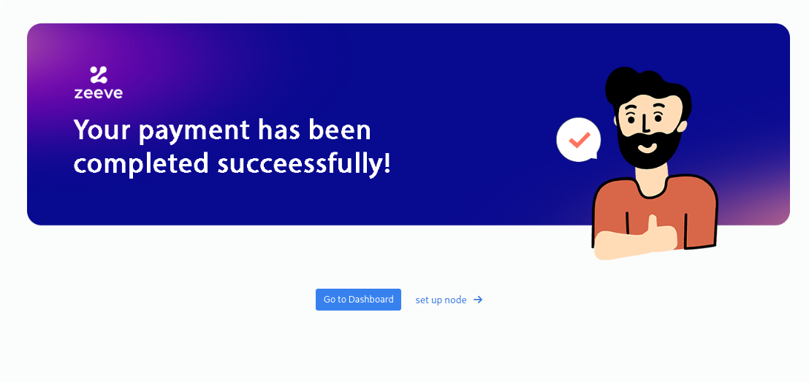

Manage your subscriptions¶
This section talks about how one can purcahse subscription of their choosen service. It will also guides how one can view their subscriptions, also edit and delete their subscriptions.
Purchase Subscriptions¶
This section is going to guide how you can you purchase subscription of protocols of you choice and start deployment of nodes.
Click on Marketplace on the left side navigation bar.

You will be landed to zeeve’s market place page. Select the protocol card of you choice to purchase subscription of the protocol.

You will be redirected to purchase page of the protocol, which looks similar to the below image.

NOTE This page can be different for different protocls. Node types can vary from protocol to protocol
Select the number of nodes you want to purchase. You can also view the amount based on your selection of different options and number of nodes. After your selection, click on subscribe button. A pop up window will open similar to the below image. Click on continue.

You will get redirect to the payment page to complete your purchase of subscription. Fill all the required details and click subscribe.

NOTE Prices on this page totally depends on protocol and your selection of different options in previous step.
After successful payment you will be redirected to payment success page which ensures successful purchase of your subscription.

View Subscriptions¶
This section is going to guide you how you can view the subscriptions you purchased.
To view the subscriptions you have purchased follow the steps given below -
Hover on profile

Click on Edit Profile

Click on subscription on the right most side.

In the subscription section you will be able to view the list of subscriptions, you currently have.

In this section you can have a look to detailed information of your subscriptions.
Monthly cost: This tells you about the amount of each of the subscriptions.
Next Billing Cycle: It provides the next renewal date of a subscription.
Total subscribed: This talks about the quantity of each of the item you have purchased with the subscription.
Available: This tells you about available quantity of each of the item associated with the subscription. This number will increase or decrease according to the consumption of the item as you delete a network/node or create a network/adding a node respectively.
This will help you to keep track of the consumption of each of the items, so that you can update your subscription as your needs.
Edit Subscriptions¶
This section talks about how to edit the subscriptions you purchased. You can choose to add more items to your subscription or you can also choose to decrease the quantity of the already purchased items.
Increase items¶
You can increase items of your subscriptions in two ways. Either you can choose to add new items to the subscriotion or you can choose to increase the quantity of alredy purchased items with the subscription.
To add a new item click on the subscribe more button on the right most side of the subscription. Which will redirect you to the purcahse page of the selected product.
To increase the quantify of alredy purchased item follow the steps mentioned below:-
Go to subscriptions section.
Click on the update button on the right most side of the subscription.
A pop up window will be opened similar to the image provided below.

Increase the quantity of the item of your choice by clicking the green button associated to it and click on update button. A continue button will apper on the pop up window.

Clicking on the button will redirect you to the payment page, where you can view the items you have just added. Click on the subscribe button to complete the process of updation of your subscription.

After successful payment of the item you can view your updated subscription in subscriptions section.
Decrease items¶
Go to subscriptions section.
Click on the update button on the right most side of the subscription.
A pop up window will be opened similar to the image provided below.
Decrease the quantity of the item of your choice by clicking the red button associated to it and click on update button.

Clicking on the button will update your subscription. A continue button will apper on the pop up window.

After successful updation you can view your updated subscription in subscriptions section.
INFO: One can decrease the quantity of an item as much as available quantity of that item.
Delete Subscriptions¶
This section talks about how to delte the subscriptions you don’t need.
Before deleting a subsection, make sure that any of the items of the subscription is not consumed. Basically, make sure that the purchased quantity and available quantity is same for each of the item associated with the subscription. Otherwise you will not be able to delete a subscription.
Go to subscriptions section.
Click on the update button on the right most side of the subscription.
A pop up window will be opened similar to the image provided below.
Decrease the quantity of each of the item to 0 by clicking the red button associated to it and click on update button. This will delete your selected subscription.